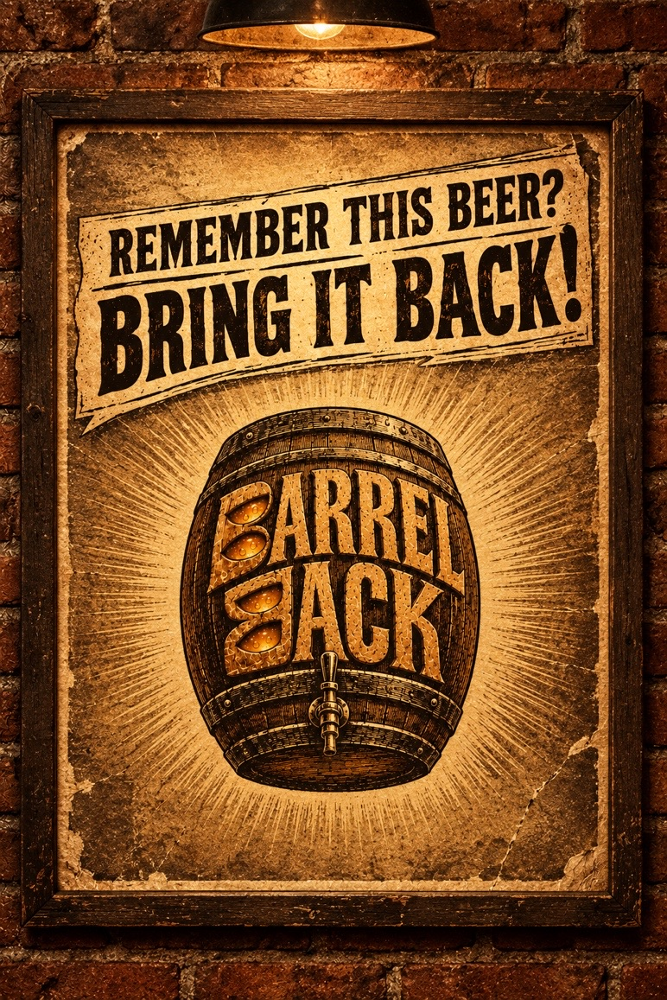

BarrelBack: the beer that refused to be forgotten
A superhero comeback story. Powered by beer. Driven by love. Chatty Girija on why the most powerful launch is sometimes the one people have been asking for all along.

Every beer has a first pour but only a few earn a second
Every hero has an origin story. Every beer has a first pour. Only a few earn a second coming.
Picture a brewery at the end of a long working day. Stainless steel fermenters gleam under the lights. Pipes hum. Somewhere, a fresh batch is finding its character. Outside, a crowd stands shoulder to shoulder holding empty mugs, looking up and smiling. Some have heard the stories. Others remember the taste. All of them are waiting for the same thing.
Above them, against a sky bursting with golden rays, one giant wooden barrel hangs in the air. Its aged timber carries a name that refuses to disappear: BARRELBACK. The brass tap opens. Amber beer begins to flow. A legend is coming home.
But first, let's rewind a little.
One missing name can leave a space at the bar
The bar was warm. The wood was worn smooth by years of elbows, conversations and raised glasses. The regulars were back at their favourite tables. Yet one old name was missing from the beer menu.
Someone asked the bartender. Someone else remembered the taste. Then, somewhere in a corner of the internet, an old photograph resurfaced with a simple message: "Remember this beer? Bring it back!" One comment became a conversation. The conversation became a chorus. In the shadows, a legend stirred.
Meet BarrelBack, our fictional, genderless beer superhero. No cape. No secret identity. No dramatic speech about saving humanity. Just a brilliant brew, a loyal following and unfinished business with the world. BarrelBack wasn't coming back for revenge. BarrelBack was coming back for love.

People remember the night as much as the liquid
Years ago, BarrelBack ruled the taps. Its bold hop aroma announced it before the glass reached the table. Its malt backbone gave it depth. Its finish lingered long after the last sip.
Then came the final pour. The brewery moved on. New beers took centre stage. BarrelBack lived on in old photographs, familiar stories and the occasional question at the bar.
For Maya, it was the beer she shared with her closest friends on the night she got her dream job. For Vinay, it was the first craft beer that made bitterness taste beautiful. For Sam, it was the beer that turned a chance meeting at a bar into a lifelong friendship. Different people. Different stories. One common grain.
When people ask for a beer to return, they are rarely talking about liquid alone. They are remembering the people they drank it with and the nights that ran longer than planned. A forgotten beer can be brought back with a recipe. A beloved beer has something more powerful waiting for it: a following. Remember, there is #beerineverything.
Real breweries have already answered the call
BarrelBack isn't the first beloved brew to get another shot at glory. Take Double Jack, the West Coast double IPA from Firestone Walker Brewing Company in Paso Robles, California. It launched in 2009 and was discontinued in 2016, yet hop lovers never let it go. On 17 February 2026 the brewery announced a limited return at 9.5% ABV, in four-pack cans sold only in its taprooms, to mark its 30th year. In its own words: "fans never let the legend fade. In 2026, we answered the call."
Then there is Zima, the clear malt drink first sold in 1993 and pulled from US shelves by MillerCoors in October 2008. It came back for a limited summer run in 2017. Gavin Hattersley, then chief executive of MillerCoors, said the whole 39,000 barrel run (about 46,000 hl) sold out between 4 July and Labor Day.
Different drinks. Different markets. The same enduring truth: sometimes the most powerful launch is the one people have been asking for all along. So the better question for a brewery is not which beer has the newest label. It is which beer still has a place in people's hearts. We look at the business side of that in bringing back a retired beer.
Nostalgia gets people in but the beer has to deliver
Back in our movie, the legend is ready for another pour. Inside the brewery the lights come on and the old recipe comes out of hiding. The malt is milled. The hops are chosen. The yeast gets to work. The brewers watch, taste, adjust and wait.
There are no shortcuts to bringing a beer back properly. Nostalgia might get people through the door. The beer still has to deliver. One disappointing glass undoes ten years of fond memory. Batch by batch, BarrelBack finds its way home.
Then comes the announcement: THE BARRELBACK BATCH IS BACK. The barrel rises above the brewery. The brass tap opens and a golden stream pours into the crowd below. Old regulars return. New drinkers arrive to see what the fuss is about. Someone remembers a night from ten years ago. Someone else makes a new memory.
Being remembered is a superpower no launch budget can buy
Beer has plenty of ways to get noticed: the outrageous ABV, the exotic hop, the spectacular label, the launch party that promises to be bigger than the last one. BarrelBack reminds us of another kind of power. The power of being remembered.
A beer people have loved before does not need to introduce itself from scratch. It arrives with a history and a group of people ready to tell the next generation why it matters. Choosing what to call a beer and how it looks on the shelf is where that memory starts, which is why naming a beer brand matters long before any comeback.
That does not mean every old beer deserves a second run. Times change. Tastes evolve. Recipes have to stand up to the present as well as the past. When people still talk about a beer years after the final pour, though, there may be something worth revisiting. The opportunity is to bring the best of yesterday into today.
Every beer deserves a second act
For breweries, the lesson is simple. Listen to the people who keep asking. Revisit the beers that still live in their memories. Get the recipe right. Bring back the liquid, then celebrate the stories that made it matter.
The next big idea might not be a new beer at all. Sometimes the hero does not save the world. Sometimes the hero simply makes Friday night feel right again. BarrelBack is back. The mugs are empty. The people are waiting. The story is far from over.
And they all lived hoppy ever after.
Now tell us: which beer do you want back? Which old favourite deserves one more pour and one more chapter? Send us its name. Every great comeback starts with someone asking the question. Remember this beer? Bring it back!
References
- Firestone Walker Brewing Company. Back by Popular Demand: Double Jack Returns for 2026. 17 February 2026. firestonewalker.com
- Chicago Tribune. Clearly, you missed it. Zima is coming back. 17 February 2017. chicagotribune.com
- PhillyVoice. Report on Zima's 2018 return, quoting MillerCoors chief executive Gavin Hattersley on the 2017 run. phillyvoice.com
Chatty Girija spent more than 30 years in advertising, hosts the Cheers Chatty Beer Podcast and teaches at Craft Beer School.
Common questions
Is BarrelBack a real beer?
No. BarrelBack is a fictional, genderless beer superhero we made up to tell the story of a comeback. Double Jack and Zima, the examples in the piece, are real.
Which real beers have come back after being retired?
Firestone Walker brought back Double Jack, a 9.5% ABV double IPA, for a limited 2026 release after discontinuing it in 2016. MillerCoors brought Zima back for limited summer runs in 2017 and 2018 after ending US production in 2008.
Should every retired beer be brought back?
No. Tastes change and the recipe has to stand up today. A beer people still ask about years after the last pour is the one worth testing first.